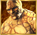

5-reel 20-line slots
The object of Fantastic Four is to obtain winning symbol combinations by spinning the reels.
To play the game:
- A wagering denomination (coin value) can be chosen by clicking the Click to Change denomination button in the lower left-hand corner of the screen.
- Line bets are chosen by clicking Bet per Line. Each click adds a coin to the line bet. When the maximum amount is reached (10 coins of the selected wagering denomination), clicking the button again resets the line bet to one coin.
- Paylines are chosen by clicking Lines. Each click activates a payline. When all paylines are activated, clicking the button again resets it to one active payline. Paylines can also be activated by using the numbered buttons on either side of the reels. Selecting a high payline includes all the lower ones too. For example, selecting payline 6 also activates paylines 1 through 5.
- Total bet per game round = line bet X active paylines.
- Clicking Spin spins the reels with the current selection of lines and line bets. During the reel spins the Spin button changes intoStop. Clicking Stop ends the spin animation and immediately displays the spin result.
- Reels can also be spun using the Auto Start function. Clicking + or – above Auto Start selects the successive number of spins to be enabled. Clicking Auto Start spins the reels. The Auto Start button changes into Stop during the Auto Start mode of reelspin. The Auto Start mode ends when the reels have been spun the number of times determined by the player, or when the player clicks Stop.
- Wins are calculated according to the paytable. Line win = line bet X corresponding multiplier according to the paytable. Scatter win = total bet X corresponding multiplier according to the paytable. The paytable can be accessed via the Info page.
- On a given payline, only the highest payline winning combination pays while simultaneous winnings on different paylines are accumulated.
- In case of a winning spin, the Win field displays the accumulating winnings. The Win ticker can be stopped by clicking anywhere on the screen to display the total win amount immediately.
- Payline wins and the total win are also displayed on the strip located at the bottom of the reels or the game window.
Info page:
- Clicking Info opens the reference screen describing different game components. Clicking the arrow buttons at the lower right-hand corner of the screen enables you to navigate between the different info screens.
- Paytable screen shows all the winning combinations.
- 3 or More screen describes the free games rules and the conditions that trigger the special features.
- Mr. Fantastic Feature screen describes when this feature is triggered and explains its behavior.
- Invisible Woman Feature screen describes when this feature is triggered and explains its behavior.
- Human Torch Feature screen describes when this feature is triggered and explains its behavior.
- The Thing Feature screen describes when this feature is triggered and explains its behavior.
- Marvel Multi-Level Mystery Progressive Jackpot screen describes how to win entry to the Marvel Multi-Level Mystery Progressive Jackpot game that wins one of four jackpots, and explains the game’s rules.
- Clicking Show Paylines on the Paytable page, opens a screen that illustrates all possible payline combinations. Clicking Hide Paylines closes this screen and returns to the Paytable page.
- Clicking Back closes the Info screen and returns to the game.
Paylines:
- Active paylines are represented by lines that appear over the reels. Paylines can be activated and their shape displayed by progressively clicking Lines.
- Only active paylines can register wins.
- There is a difference between the line bet and the total bet. The line bet shows how much is being bet on a single payline. The total bet shows how much is being bet in total on the game round. Payouts shown in the paytable are multiplied by the line bet.
The Scatter symbol is an exception to these rules. More information about the Scatter symbol can be found below.
About payouts:
- If a symbol has a winning combination on more than one reel, the winnings are added up.
- Winning combinations must start from the leftmost reel, and the symbols have to be on consecutive reels.
- If two payline winning combinations occur on the same line, the higher of them is paid out. If more than one active payline has a winning combination, the winnings are accumulated.
- Winning combinations must start from the left most reel, and the symbols have to be consecutive.
The Scatter symbol is an exception to these rules. More information about the Scatter symbol can be found below.
Wild symbol
The Wild symbol in the game is the symbol. It can stand for any other symbol, except Scatter, to make the best possible winning combination. In addition, two or more Wild symbols on an active payline pay as per the rules of the Paytable.
Scatter symbol
The Scatter symbol in the game is the symbol. The Scatter symbols do not have to occur on any particular payline. If there are three or more Scatter symbols in the results, 12 Free Games are awarded and an additional payout win is earned. The payout for the Scatter symbols is multiplied by the total bet.
If three or more Scatters appear anywhere on the reels during Free Games, only a payout is won but the Free Games will not be retriggered.
Free Games
3 or more Scatter symbols trigger the Free Games. To begin, the player must click on Click to Start. The screen changes automatically to a graphic screen that explains the four special features in Free Games. The player must click on ‘CONTINUE’ to proceed to the Free Game reels, which then spin automatically.
During the free spins, the reels are spun automatically using the same number of lines and bets per line as on the spin that won the free spins. After each spin, the win is displayed in the Win field. The Free Spin Win field shows the accumulated winnings from the current free spins.
After all free spins have been completed, a result board summarizes the winnings. Game win shows the winnings that were received from the spin that won the free spins. Feature win shows the winnings that were received from the free spins. Total win shows the aggregate winnings (Game Win and Bonus Win added up).
Clicking Continue will return you to the main game.
In Free Games, reel #3 is stacked with the four hero symbols: Mr. Fantastic, the Invisible Woman, the Human Torch and the Thing. If all positions on reel #3 show the same hero, a special feature is triggered that corresponds to that hero symbol. During the special features, reel #3 is not stacked with heroes and more special features cannot be triggered.
In the beginning of any of the four special features, the number of extra feature spins added is shown in the middle of the reels. The message fades and the extra feature spins are played. In addition, the logo on top of the reels changes to the name of the feature. Any wins are added automatically to the Free Games win on the screen. At the end of any of the four extra feature spins, the logo on top of the reels changes back to the Free Games logo and the Free Games continue automatically. Free Games cannot be retriggered.
The following are the four special features which can be won in this way in Free Games:
Mr. Fantastic Feature
The Mr. Fantastic symbol in the game is the  symbol. 4 feature spins are awarded to the player, during which Mr. Fantastic becomes Expanding Wild. This means that if the Mr. Fantastic symbol appears on a reel during a feature spin and it is possible to have a winning combination by having it substitute for any other symbol (except for the Wild and Scatter symbols) anywhere on that reel, it will expand to cover the entire reel. All places on the reel will be considered as Wild for that spin alone.
symbol. 4 feature spins are awarded to the player, during which Mr. Fantastic becomes Expanding Wild. This means that if the Mr. Fantastic symbol appears on a reel during a feature spin and it is possible to have a winning combination by having it substitute for any other symbol (except for the Wild and Scatter symbols) anywhere on that reel, it will expand to cover the entire reel. All places on the reel will be considered as Wild for that spin alone.
Invisible Woman Feature
The Invisible Woman symbol in the game is the symbol. One total bet is awarded to the player and 4 feature spins are triggered. Every time the Invisible Woman appears on any reel at least once during a feature spin, a multiplier is increased by one step. When the feature ends, all prizes won during the feature spins are multiplied by the accumulated multiplier.
Human Torch Feature
The Human Torch symbol in the game is the symbol. 4 feature spins are awarded to the player, during which reel #1 is covered by a picture of the Human Torch. The picture remains as the other 4 reels spin regularly. This means that all symbols on Reel #1 are considered to be the Human Torch symbol. The reels in this feature do not include symbols of Mr. Fantastic, the Invisible Woman or the Thing. Additional Human Torch symbols are added to the reels.
The Thing Feature
The Thing symbol in the game is the  symbol. 3 feature spins are awarded to the player. Every time the Thing symbol appears after a feature spin, it becomes Wild, substituting for all symbols except Wild and Scatter. The symbol remains in place on the reels as a Wild during all remaining feature spins.
At the end of the Free Games, a special screen detailing the wins appears. To return to the main game, the player must click on‘CONTINUE’.
Marvel Mystery Jackpot
Marvel Mystery Jackpot is a multi-level progressive jackpot game that is available in all Marvel games and is linked to all Marvel games. A small percentage of each bet in the Marvel games, by every person playing this game in each of many online casinos, is added to the progressive jackpot.
The trigger that starts the Jackpot game is random and can occur after any spin in any of the linked games. It is not caused by any symbol combination in the linked games and even a spin that does not win anything in the main game can trigger the Jackpot game. Likewise, any bet with any size in the linked games can trigger the Jackpot game. Nonetheless, the chances of triggering the Jackpot game increase or decrease proportionally to the bet size. Entering the Jackpot game guarantees a win of one of the four jackpots. Playing the Jackpot game reveals the jackpot that has been awarded to you, but does not determine it.
There are four different levels of jackpots that you can win: Power Jackpot, Extra Power Jackpot, Super Power Jackpot and Ultimate Power Jackpot. Different types of jackpots hold different prize amounts. The jackpot gamescreen contains 20 squares which in the beginning of the gameplay are turned upside down. Clicking on a square will turn it around and reveal one of four jackpot symbols on the other side. Once you have found three matching symbols, you win the jackpot that corresponds to these symbols. Jackpot winnings are added to the main game winnings (if any) and are displayed in the Win field together with any other winnings.
The Marvel Mystery Jackpot game has a timeout timer. This means that if you do not pick a square in a set amount of time, you will automatically receive your prize.
The Jackpot for this game works like this:
|
Seed (how much money the Jackpots start out with): |
Power: €50 |
|
Contribution rate (what percentage of each bet goes into Jackpot): |
0.99% |
|
Win condition (the result you have to get to win the Jackpot): |
Entering the jackpot game guarantees a win. Match 3 jackpot symbols of the corresponding Jackpot or wait for the timer to run out. |
|
Win requirements (what you need to do to be eligible for the Jackpot): |
Play a Marvel game. |
Please note:
- The seed and Jackpot values are in Euros in the progressive network and their value in your local currency is dependent on the currency exchange rate.
- The mechanics of Marvel Mystery Jackpot prohibit simultaneous jackpot winnings.
- Imperfections in the Internet connectivity may cause you to experience delays in Jackpot messages or updates, but they do not affect actual Jackpot wins.
Return to Player
The theoretical percentage return to player (RTP) is 94.88%.